Container Options
The standard way of using appJar, is simply to place all widgets into a single window.
Everything is grouped into that single window, and any changes affect everything in that window.
It's sometimes desirable to group widgets together within a window.
Or to have multiple pages of widgets.
A number of options are provided to make this easier.
Format
All of these methods work in the same way.
You call the start function when you want to start a container, then the stop function when you're done.
When you call start you can pass in positional arguments like any other widget (row, column, rowspan, colspan).
Any GUI Options you set, within the container, will only affect that container.
Label Frame
A way of grouping widgets into a box, with a label at the top of the box.
Position the LabelFrame within the grid, then position widgets inside the LabelFrame
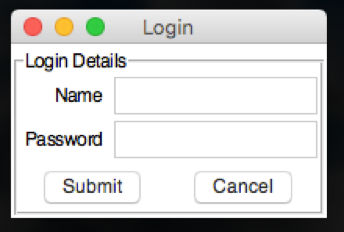
from appJar import gui
app=gui()
app.startLabelFrame("Login Details")
# these only affect the labelFrame
app.setSticky("ew")
app.setFont(20)
app.addLabel("l1", "Name", 0, 0)
app.addEntry("Name", 0, 1)
app.addLabel("l2", "Password", 1, 0)
app.addEntry("Password", 1, 1)
app.addButtons(["Submit", "Cancel"], None, 2, 0, 2)
app.stopLabelFrame()
app.go()
Start/Stop Label Frames
.startLabelFrame(name)&.stopLabelFrame()
Used to start and stop a LabelFrame
The specified title will be used as the label for the frame.
Set Label Frames
.setSticky(coords)
By default, widgets in the frame will align on the left.
If you want to change this, specify a differentstickyvalue.
For example,.setSticky("ew")will cause the widgets to stretch to fit the width, aligning in the centre.
Toggle Frame
A collapsible container for a group of related widgets.
By default, the contents of the frame are hidden.
They can be revealed/hidden again by clicking an associated button.
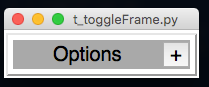
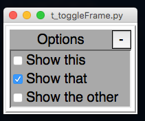
from appJar import gui
app=gui()
app.setFont(20)
app.startToggleFrame("Options")
app.addCheckBox("Show this")
app.addCheckBox("Show that")
app.addCheckBox("Show the other")
app.setCheckBox("Show that")
app.stopToggleFrame()
app.go()
Start/Stop Toggle Frames
.startToggleFrame(title).stopToggleFrame(title)
Used to start and stop a ToggleFrame.
Thetitlewill be used as the title for the ToggleFrame.
Set Toggle Frames
.toggleToggleFrame(title)
Will toggle the state of the specified ToggleFrame..disableToggleFrame(title, disabled=True)
Will disable the specified ToggleFrame.
Ifdisabledis set to False, the ToggleFrame will be re-enabled.
Get Toggle Frames
.getToggleFrameState(title)
Will return True if the ToggleFrame is open, else will return False.
Tabbed Frame
A way to create a (basic) tabbed-style interface.
Position the TabbedFrame within the grid, start a Tab, then position widgets inside the Tab
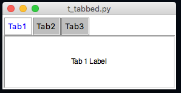
from appJar import gui
app=gui()
app.startTabbedFrame("TabbedFrame")
app.startTab("Tab1")
app.addLabel("l1", "Tab 1 Label")
app.stopTab()
app.startTab("Tab2")
app.addLabel("l2", "Tab 2 Label")
app.stopTab()
app.startTab("Tab3")
app.addLabel("l3", "Tab 3 Label")
app.stopTab()
app.stopTabbedFrame()
app.go()
Start/Stop Tabbed Frames
-
.startTabbedFrame(name)&.stopTabbedFrame()
Used to start & stop the a TabbedFrame, with the specified name. -
.startTab(name)&.stopTab()
Used to start and stop each of the tabs in the TabbedFrame.
The title for the tab will be the specified name.
Set TabbedFrame
-
.setTabbedFrameTabExpand(title, expand=True)
By default, the tabs take up the minimum amount of space necessary.
Set this to True, to have the tabs fill the entire row.
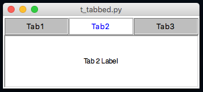 -
.setTabbedFrameSelectedTab(title, tab)
Select the specified tab in the TabbedFrame. -
.setTabbedFrameDisabledTab(title, tab, disabled=True)
Disable the specified tab in the TabbedFrame.
Set disabled to False to re-enable it.
This will also change the displayed tab, if the disaplyed tab is being disabled. -
.setTabbedFrameDisabledAllTabs(title, disabled=True)
Will disable all tabs for the named TabFrame.
Or, enable them if disabled is set to False.
Changing Colours
TabbedFrames have a set of colours that can be changed:
- ActiveFg - Sets the colour of the text in the active tab
- ActiveBg - Sets the background colour of the active tab
- InactiveFg - Sets the colour of the text in all inactive tabs
- InactiveBG - Sets the background colour of all inactive tabs
- DisabledFg - Sets the colour of the text in all disabled tabs
- DisabledBg - Sets the background colour of all disabled tabs
- Bg - Sets the background colour behind the widget - only visible at the end of the tabs
These are all changed via the standard property changing functions, eg:
.setTabbedFrameBg("t1", "red").setTabbedFrameActiveBg("t1", "yellow")
It is also possible to change the colour of individual panes.
Call .setBg("colour") while adding widgets to the specific pane.
Or .setTabBg(title, tab, 'colour') at other times.
Get TabbedFrame
.getTabbedFrameSelectedTab(title)
Gets the name of the currently selected tab, for the named TabFrame.
Paned Frame
A way to present re-sizable panes, separated by drag-bars.
Once the first pane is placed, all additional panes should be placed inside it.
By default, panes will be placed side-by-side (horizontally).
This can be changed by setting the pane to vertical, then they'll be placed underneath each other.
Start/Stop Paned Frames
.startPanedFrame(name),.startPanedFrameVertical(name)&.stopPanedFrame()
Used to start & stop PanedFrames, with the specified name.
By default, any panes added to this pane will be added side-by-side (horizontally).
Starting a vertical pane will cause additional panes to be stacked on top of each other.
Horizontal Pane Layout
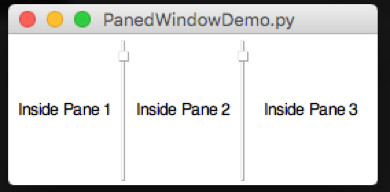
- Start an initial pane
- Start all additional panes inside the initial pane
from appJar import gui
app = gui()
# start initial pane
app.startPanedFrame("p1")
app.addLabel("l1", "Inside Pane 1")
# start additional panes inside initial pane
app.startPanedFrame("p2")
app.addLabel("l2", "Inside Pane 2")
app.stopPanedFrame()
app.startPanedFrame("p3")
app.addLabel("l3", "Inside Pane 3")
app.stopPanedFrame()
# stop initial pane
app.stopPanedFrame()
app.go()
Vertical Pane Layout
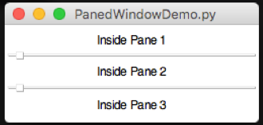
- Start an initial, vertical pane
- Start all additional panes inside the intial pane
from appJar import gui
app = gui()
# start initial, vertical pane
app.startPanedFrameVertical("p1")
app.addLabel("l1", "Inside Pane 1")
# start additional panes inside initial pane
app.startPanedFrame("p2")
app.addLabel("l2", "Inside Pane 2")
app.stopPanedFrame()
app.startPanedFrame("p3")
app.addLabel("l3", "Inside Pane 3")
app.stopPanedFrame()
# stop initial pane
app.stopPanedFrame()
app.go()
E-Pane Layout
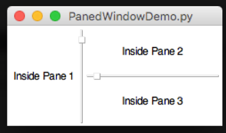
- Start an initial pane
- Start a second, vertical pane inside the intial pane
- Start all additional panes inside the second pane
from appJar import gui
app = gui()
# start initial pane
app.startPanedFrame("p1")
app.addLabel("l1", "Inside Pane 1")
# start second, vertical pane inside inital pane
app.startPanedFrameVertical("p2")
app.addLabel("l2", "Inside Pane 2")
# start additional panes inside second pane
app.startPanedFrame("p3")
app.addLabel("l3", "Inside Pane 3")
app.stopPanedFrame()
# stop second & initial panes
app.stopPanedFrame()
app.stopPanedFrame()
app.go()
T-Pane Layout
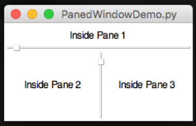
- Start an initial, vertical pane
- Start a second pane, indside the initial pane
- Start additional panes inside the second pane
from appJar import gui
app = gui()
# start intial, vertical pane
app.startPanedFrameVertical("p1")
app.addLabel("l1", "Inside Pane 1")
# start second pane
app.startPanedFrame("p2")
app.addLabel("l2", "Inside Pane 2")
# start additional panes inside second pane
app.startPanedFrame("p3")
app.addLabel("l3", "Inside Pane 3")
app.stopPanedFrame()
# stop second & initial panes
app.stopPanedFrame()
app.stopPanedFrame()
app.go()
Paged Window
A container that mimics a classic phone based interface.
It provides PREVIOUS/NEXT buttons to navigate through a series of pages.
It has an optional widget title, and shows the current page, in a page counter.
Keyboard bindings are provided to navigate with arrow key presses. CTRL-arrow will navigate to the beginning/end.
Events can be bound to page changes, the page can be changed via a funciton call, and the current page number can be queried.
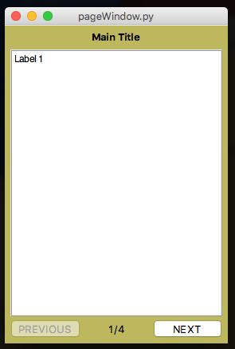
from appJar import gui
app=gui()
app.setBg("DarkKhaki")
app.setGeometry(280,400)
app.startPagedWindow("Main Title")
app.startPage()
app.addLabel("l13", "Label 1")
app.stopPage()
app.startPage()
app.addLabel("l21", "Label 2")
app.stopPage()
app.startPage()
app.addLabel("l3", "Label 3")
app.stopPage()
app.startPage()
app.addLabel("l4", "Label 4")
app.stopPage()
app.stopPagedWindow()
app.go()
Start/Stop Paged Windows
.startPagedWindow(title).stopPagedWindow()
Used to start and stop a PagedWindow.
Thetitlewill be used in the title section of the widget..startPage().stopPage()
Used to start and stop each new page.
Navigation, page count, etc are all dealt with automatically.
Set Paged Windows
.setPagedWindowTitle(title, title).setPagedWindowButtons(title, [buttons])
Used to change the text in the title and buttons.
When changing the buttons, two values must be passed in: previous/next..setPagedWindowButtonsTop(title, top=True)
Used to position the navigation buttons. By default, they are at the bottom.
Call this funtion to move them to the top..setPagedWindowPage(title, pageNum)
Used to display the selected page..setPagedWindowFunction(title, function)
Declare a function to call, each time the page is changed..showPagedWindowPageNumber(title, show=True).showPagedWindowTitle(title, show=True)
Use these to declare if you want the page title, page numbers to be shown.
Get Paged Windows
.getPagedWindowPageNumber(title)
Used to get the page number currently being shown.
Sub Window
A way to add additional windows, which can be hidden and shown.
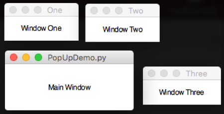
from appJar import gui
def launch(win):
app.showSubWindow(win)
app=gui()
app.startSubWindow("one", modal=True)
app.addLabel("l1", "SubWindow One")
app.stopSubWindow()
app.startSubWindow("two")
app.addLabel("l2", "SubWindow Two")
app.stopSubWindow()
app.addButtons(["one", "two"], launch)
app.go()
Start/Stop Sub Windows
.startSubwindow(name, title=None, modal=False)&.stopSubwindow()
Used to start and stop defining a SubWindow
Setting atitlewill override thenameas a title for the SubWindow.
Settingmodalto True, will prevent the user from interacting with the parent window until the SubWindow is closed.
Show/Hide Sub Windows
-
.showSubWindow(title)
Will cause the specified SubWindow to be shown.
If it is set as modal the parent window will become uninteractive until the SubWindow is closed. -
.hideSubWindow(title)
Used to hide the specified SubWindow.
This will not destroy the SubWindow, so it can be shown again later. -
.destroySubWindow(title)
This will hide and permanently destroy the specified SubWindow.
It cannot be shown again.
It's useful to be able to create a button that stops a SubWindow:
If you create a button, that calls .hideSubWindow() or .destroySubWindow(), and give it the same name as the SubWindow, then it will hide/destroy the SubWindow, and call any associated .stopFunction().
app.startSubWindow("Demo")
app.addLabel("l1", "Press the button to close this window")
# set the button's name to match the SubWindow's name
app.addNamedButton("CLOSE", "Demo", app.hideSubWindow)
app.stopSubWindow()
Set Sub Windows
Note, all functions available on the main window are also available on SubWindows.
Simply call those functions after starting a SubWindow.
app.startSubWindow("one", modal=True)
app.setBg("orange")
app.setGeometry("400x400")
app.setTransparency(25)
app.setStopFunction(checkDone)
app.addLabel("l1", "In sub window")
app.stopSubWindow()
Under Development
Frame
A simple way of grouping together widgets.
Position the Frame within the grid, then position widgets inside the Frame
Start/Stop Frames
.startFrame(name)&.stopFrame()
Used to start and stop a Frame
Scroll Pane
A scrollable frame, to contain widgets.
.startScrollPane(title).stopScrollPane()
Used to start and stop the ScrollPane.